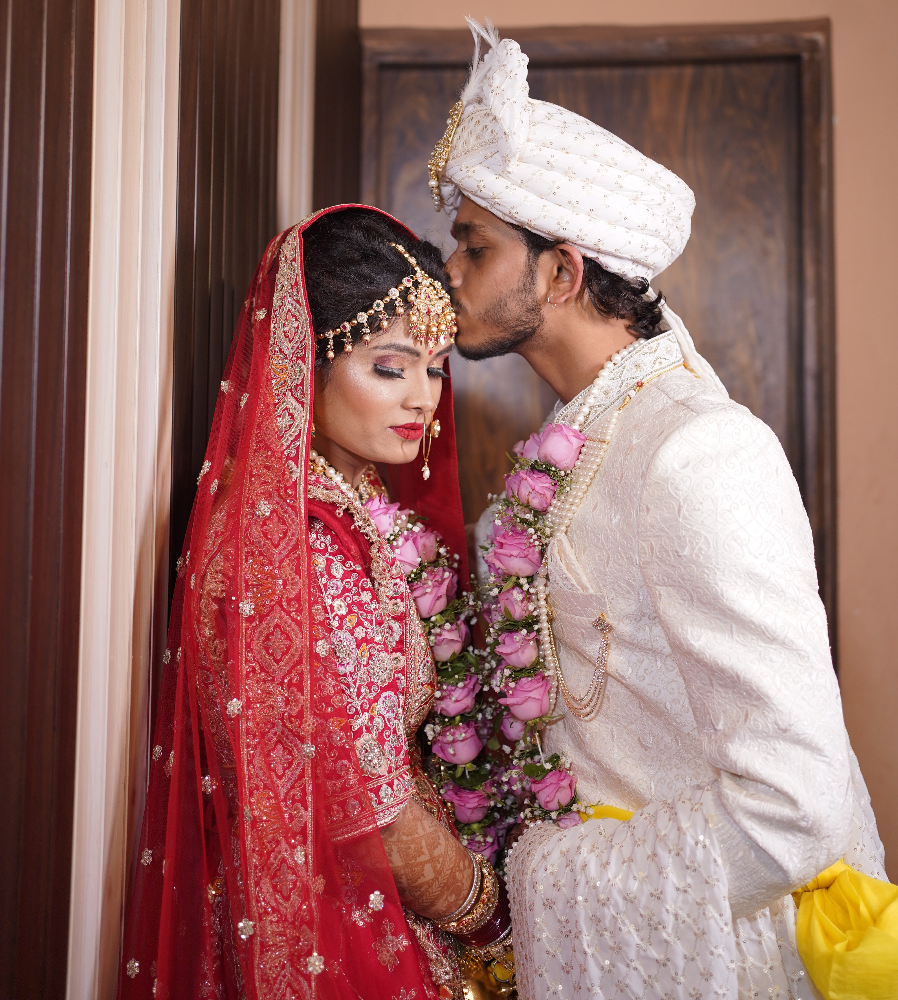
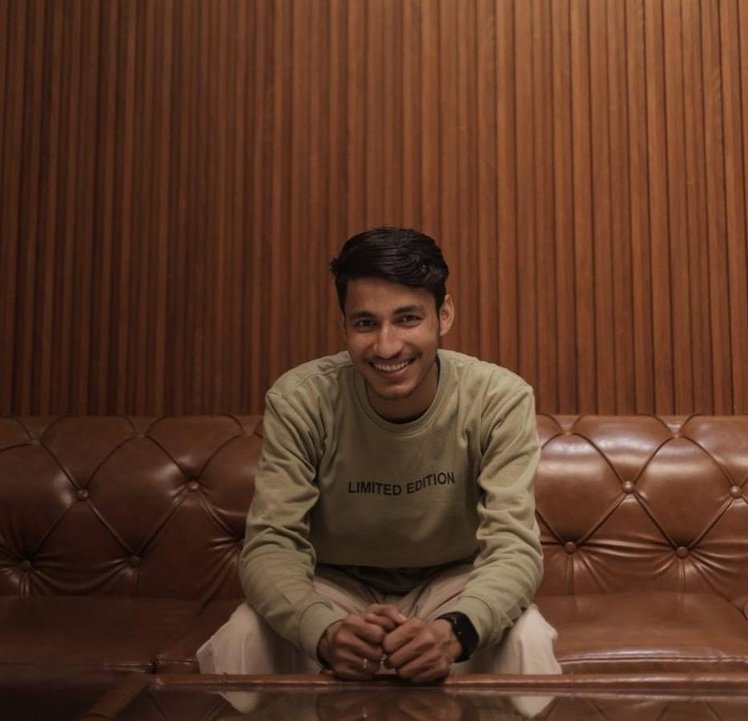

Portraits & lifestyle
Personal portraits, couples, families, and editorial sessions that feel natural and full of personality.
I'm Ajay, a photographer capturing fleeting moments, beautiful details, and the stories and emotions hidden within every frame.

A collection of moments, places and people, captured through my lens.

I believe the best photographs feel like you were there. My approach is relaxed, thoughtful, and rooted in connection, creating images that feel timeless rather than staged.
Based in Kanpur, available for assignments and adventures worldwide.
Personal portraits, couples, families, and editorial sessions that feel natural and full of personality.
Honest coverage of the big moments and all the little ones you didn't know you'd want to remember.
Visual stories for destinations and thoughtful brands, from campaign imagery to documentary travel.
Tell me what you're planning, dreaming up, or hoping to capture. I'd love to hear about it.
Usually replies within 2 business days.